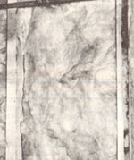
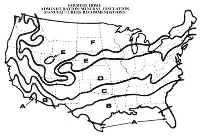
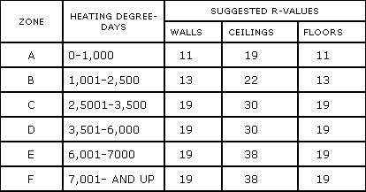

Know Your Insulations
Your family can stay warmer while spending less on heating, including manufacturer's recommendation by weather zone, R-value per inch, density, moisture permeability.
By the Mother Earth News editors
November/December 1982
Issue # 078 - November/December 1982
In the search for ways to reduce the cost of home heating, it's gradually being recognized that it's a heck of a lot easier and less expensive to hang onto the warmth you've got than it is to produce more . . . whether that heat is garnered from another unit of our ever-depleting supplies of fossil fuels or from benign solar energy. And the recent success of superinsulated housing is, perhaps, the strongest testimonial to the fact that thermal conservation measures are becoming accepted practices in the construction of even conventional-looking homes .
And, of course, the growth of interest in insulation has led to a strong marketplace, with dozens of different products being offered . . . both for new construction and for retrofit. In this article-and in the accompanying side pieces-we'd like to try to unravel some of the mystery surrounding different types of insulation. As you'll learn, each material has its place, and proper selection will help you to put up the most effective thermal barriers-with the greatest ease-for the least amount of money.
CLASS AND TYPE
Insulants generally fall into one of three categories: batts and blankets, which fit into a home's wood framing . . . loose fill, which is blown or poured between joists in a ceiling or into closed wall spaces . . . and rigid board, which can serve as a sheathing material. (Bans are distinct from blankets in that they have no facing, while the latter have either a paper material for stapling to studs or a foil layer that both secures the layers and reflects radiant heat.)
R-VALUE PER INCH
The importance of the thermal resistivity (R-value) of a particular insulant is most evident in situations where there's a limited amount of space to fill with the material. Within a stud wall space, for example, 3-1/2" fiberglass will produce a finished R-value of about 13. By filling the space with polyurethane foam, however, that same 3-1/2" space could produce a rating of about R-26. (The cost of all that polyurethane would be quite high, though.) In locations where space isn't at a premium, however-in attics, for instance-it will generally be more practical to simply stack up less costly materials to a greater depth.
DENSITY
Of course, the amount of insulation that can be placed in a given location will sometimes be limited by the weight the material will add to the building. Loose-fill insulants-such as vermiculite and perlite-can be quite heavy. And, in an attic space where the insulation is resting atop the ceiling, loads over three pounds per square foot may cause the ceiling to sag. So when you're studying the figures we've supplied in the accompanying chart, bear in mind that the weights per square foot listed all apply to a 12" material thickness.
MOISTURE PERMEABILITY
Some insulants let water vapor pass through easily, while others are relatively effective vapor barriers. However, the latter quality may prove to be either an advantage or a disadvantage. For example, if you have walls insulated with fiberglass that doesn't, itself, have a vapor barrier and are considering adding an inch of polystyrene while replacing the siding on your house, watch out! That impermeable rigid board will prevent the walls from breathing, and your fiberglass will likely become waterlogged with trapped condensation. You'd be better off putting the polystyrene on the inside (though it would have to be covered for fire protection). In either instance, the added R-value of the board would be particularly effective, since it would insulate the studs, which provide direct conductive paths from the inside to the outer walls.
MOISTURE ABSORPTION
Compared with air, water does an excellent job of conducting heat, and when the air spaces in an insulation material become filled with water, the substance's R-value deteriorates significantly. For this reason, insulation that absorbs water should never be used below ground. Furthermore, it's important to protect insulants from water vapor that may penetrate a building's shell and then condense upon reaching the colder areas. And even if the material doesn't absorb that water, the liquid may form conductive paths and/or cause the insulant (particularly if it's a low-density material) to become compressed and lose its effect.
COMBUSTIBILITY AND SMOKE TOXICITY
Many common forms of insulation can support combustion and therefore should be separated from a home's interior by a barrier. In particular, some materials release a large amount of carbon monoxide when they're exposed to flames . . . and that gas can prove a serious life threat long before a fire actually engulfs a home.
COST FACTORS
Because the price of insulation varies by region, distributor, dealer, and season, we've not listed any actual dollar figures in the accompanying chart. Rather, we've rated the different materials according to their average cost per R-number . . . on a scale of 1 to 5 (least to most expensive). Before you buy insulation, price a number of different alternatives at several building supply stores. (If you're going to be purchasing a good deal of material, be sure to inquire about a quantity discount.)
But, above all, we'd like to encourage you to add at least some insulation to your home, especially if it doesn't yet meet the standards suggested in the FmHA/MIMA Insulation Recommendations map that accompanies this article (see the preceding page). We've given only ten (or so) good alternatives to help you get started in your selection process, but the list of dollar-saving measures goes on and on.
EDITOR'S NOTE: If you'd like to find out mare about insulation-including installation techniques-you might look into one or both of the following books: The Complete Book of Insulating edited by Larry Gay (Stephen Greene Press, $7.95) . . . and The Home Insulation Bible by S. Blackwell Duncan (Tab Books, $9.95).
ELEVEN HOT SPOTS FOR INSULATION
If you've been thinking about insulating but haven't been able to decide just where to start, check through the following suggestions (ranked by cost efficiency) to see which ones might be applicable to your home. Every item on our list offers a payback of less than ten years in a mild (2,000 degree-day) climate, and the return would be accelerated in areas with more bitter winters. Our calculations are based solely, on the cost of the materials, however, so you should also weigh the amount of effort that might be involved in n particular approach against that of a close competitor.
[1] 2" fiberglass insulation to forcedair heating ducts that run through an unheated space.
[2] Lay 3-1/2" fiberglass (R-11) against the inside walls of an unheated crawl space (6" bans would be even better).
[3] Roll out 3-1/2" fiberglass between the joists in your uninsulated attic.
[4] Stretch 3-1/2" fiberglass between the joists of an uninsulated floor over an unheated, ventilated space.
[5] Wrap your water heater in an R-4 fiberglass blanket.
[6] Blow 3-1/2" of cellulose (R-14) into uninsulated wall cavities.
[7] Stretch 3-1/2" fiberglass between the joists of an uninsulated floor over an unheated, closed crawl space.
[8] Install R-6 insulating shutters over single-glazed windows.
[9] Add 3-1/2" fiberglass to the interior walls of a heated basement.
[10] Lay 3-1/2" fiberglass over existing 3-1/2" fiberglass attic insulation.
[11] Install storm windows over single glazing.
|
|
 |
 |
|
 |
 |
|